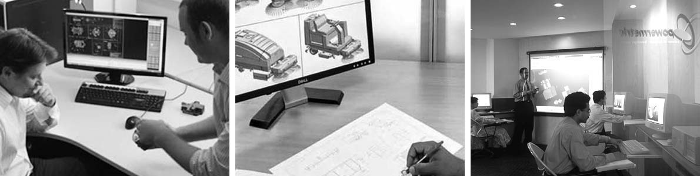

Dynamatic Technologies is a repository of diverse technologies and has transformed itself into a knowledge-based organization through sustained R&D efforts. Our focus on R & D has resulted in strong development initiatives that have enabled us to foray into providing new services, launching new products and enhancing product value to our customers.
The creation of new products and applications are not mere projects for us, but a part of our daily lives.
The JKM Science Center in Bangalore, India, houses the Dynamatic Technologies Research & Development Center, as well as a sophisticated Material Sciences Laboratory, which are engaged in
The Dynamatic Technologies Research & Development Center is completely electronic, utilising state-of-the-art parametric 3D design programs and knowledge based expert systems. The Center has been a 'Recognized In-House R&D Unit' certified by the Department of Scientific and Industrial Research (DSIR), Government of India, since 2001.
Our R&D Center is a world-class Design Center capable of total product & system design, with advanced capabilities in structural, thermal & dynamic engineering for analysis, design validation & optimization. Innovation at Dynamatic includes extending technology to new applications across domains & at evolving & shaping new ideas which will enable our customers to meet their business challenges.
The Dynamatic Hydraulics® Research Laboratory, in Swindon, England, possesses advanced design knowledge for the Mobile Hydraulics Sector, and has comprehensive product testing and validation capabilities.
Dynamatic Technologies's wholly owned subsidiary, JKM Research Farm Limited, operates a unique facility for testing and analysing complete Tractor aggregates and systems.